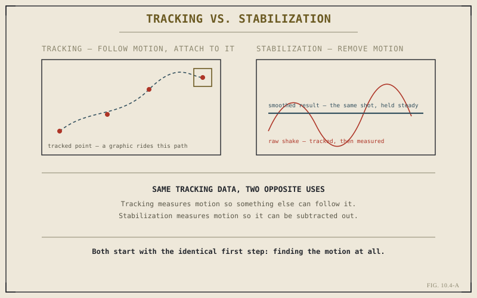

Chapter 10.3 solved isolation — cleanly separating a subject from its original background. It didn't solve motion. A keyed subject dropped onto a new background that doesn't move the way the camera moved reads as fake immediately, no matter how clean the matte is. Tracking and stabilization are the two tools that deal with motion directly, and although they're built on the same underlying technique, they use it for opposite purposes.
The Shared First Step: Measuring Motion
Both tools begin identically: analyzing a shot to determine how something within it moves, frame by frame, across the length of the clip. That something might be a single point — a mark on a wall, a corner of a doorframe — or a broader planar region tracked as a whole surface, which handles perspective shift and rotation more robustly than a single point can. Either way, the output is the same kind of thing: a precise, frame-by-frame record of motion, expressed as data rather than as a visual effect on its own. What happens next — whether that data is used to follow motion or to remove it — is where tracking and stabilization actually diverge.

Both start with the identical first step: finding the motion at all.
Tracking: Attaching Something to Motion That Stays
Tracking uses measured motion to make a composited element follow it — a graphic that needs to sit on a moving surface, a piece of type that appears to be physically attached to a wall as the camera pans past it, a replaced screen insert that has to hold its position on a phone or monitor as it moves through frame. The tracked motion data drives the position, scale, and rotation of whatever's being attached, frame by frame, so the added element moves in lockstep with the footage it's composited into rather than sliding across it like a sticker.
Stabilization: Using Motion Data to Remove Motion
Stabilization uses the same kind of measured motion for the opposite purpose — smoothing or removing camera shake rather than following it. Once a shot's unwanted motion is measured, the frame can be repositioned, frame by frame, to counteract that motion, producing footage that reads as steadier than what the camera actually captured. This matters directly for compositing specifically because a shaky handheld plate makes keyed and tracked elements far harder to sell convincingly — stabilizing the background first, before compositing anything onto it, is often the difference between a composite that holds together and one that visibly swims relative to its background.
Tracking measures motion so something else can follow it. Stabilization measures motion so it can be subtracted out. The measurement is the same step; only what happens to it afterward differs.
Combining Both in a Single Shot
Real composited shots often need both at once, and in a specific order: stabilize the background plate first, so it holds still enough for accurate tracking and a believable composite, and only then track whatever new element needs to be attached to it. Doing this in the wrong order — tracking an element to a background that later gets stabilized and therefore repositioned — throws the tracking data off entirely, since it was measured against motion that no longer exists in the final shot. This is a small sequencing detail, but it's the kind of detail that separates a composite that holds together from one that quietly doesn't.
A Note on Where the Simpler Case Belongs
Not every shaky shot needs Fusion's full tracking toolkit. A significant share of everyday stabilization needs — a slightly unsteady handheld interview, a walk-and-talk that just needs smoothing, not a full motion removal — are well served by simpler tools that don't require building a Fusion composition at all. This is the same escalation discipline Chapter 7.3 applied to titles: reach for the heavier, more capable tool only once the simpler one has a specific, identifiable limit the shot actually needs to cross. Chapter 10.6 returns to this exact judgment call directly, once the rest of Part X's toolkit is on the table.
With isolation, combining, and motion all covered, Chapter 10.5 puts the complete toolkit to work on a concrete, hands-on task: building a real title or graphic in Fusion from the ground up, rather than describing its pieces individually.
Key Concepts to Remember
- Tracking and stabilization both begin by measuring motion frame by frame — the same underlying step, used for opposite purposes.
- Tracking makes a composited element follow measured motion; stabilization uses the same measurement to remove it.
- Stabilize a background plate before tracking new elements onto it — reversing the order throws tracking data off entirely.
- Not every shaky shot needs Fusion's full tracker — simpler stabilization needs are often better served by lighter tools.
Cross-References Forward
| → Ch. 10.5 | Building a Simple Title or Graphic in Fusion — puts keying, merging, and tracking to work together on one concrete build. |
| → Ch. 10.3 | Revisit keying, the isolation step that usually precedes tracking a composited element into a shot. |
| → Ch. 7.5 | Revisit manual keyframing — tracking is a way of generating that same kind of motion data automatically from the footage itself. |